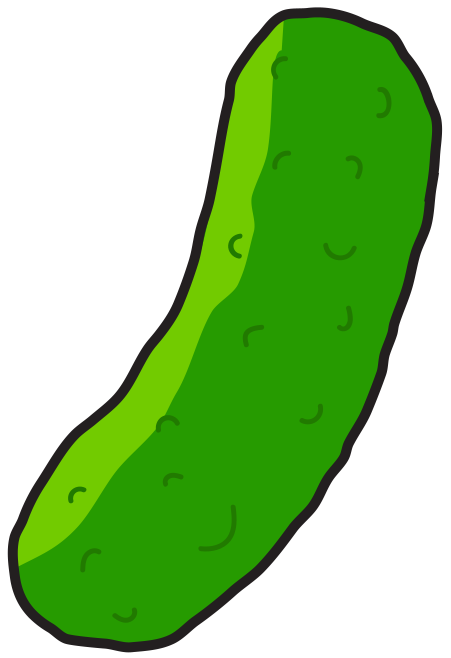

<DOCTYPE! html>
<html>
<head>
	<title>Adam Baumgartner | UX Designer</title>
	<script src="update/scripts.js"></script>
	<link rel="shortcut icon" href="work/assets/header.png">
	<meta name="description" content="Designer. Millennial. Whatever.">
	<meta name="keywords" content="adam, baumgartner, product, designer, web, ball, state, freelance, vox, millennial, ux, ui, interaction, brands, storytelling">
	<meta name="author" content="Adam Baumgartner">
	<meta http-equiv="content-type" content="text/html; charset=utf-8">
	<meta name="viewport" content="width=device-width, minimum-scale=1.0, maximum-scale=1.0" />
	<link href="style.css" rel="stylesheet" type="text/css">
	<link href='http://fonts.googleapis.com/css?family=Lato:400,700,900' rel='stylesheet' type='text/css'>
	<script type="text/javascript" src="scripts.js"></script>
</head>
<body>
	<audio id='laugh' src='laugh.mp3'></audio>
	<div class="background">
	</div>
	<div class="pickle" id="tickle">
		
	</div>
	<script>

// credit: http://www.javascriptkit.com/javatutors/touchevents2.shtml
function swipedetect(el, callback){
  
    var touchsurface = el,
    swipedir,
    startX,
    startY,
    distX,
    distY,
    threshold = 300, //required min distance traveled to be considered swipe
    restraint = 100, // maximum distance allowed at the same time in perpendicular direction
    allowedTime = 300, // maximum time allowed to travel that distance
    elapsedTime,
    startTime,
    handleswipe = callback || function(swipedir){}
  
    touchsurface.addEventListener('touchstart', function(e){
        var touchobj = e.changedTouches[0]
        swipedir = 'none'
        dist = 0
        startX = touchobj.pageX
        startY = touchobj.pageY
        startTime = new Date().getTime() // record time when finger first makes contact with surface
        e.preventDefault()
    }, false)
  
    touchsurface.addEventListener('touchmove', function(e){
        e.preventDefault() // prevent scrolling when inside DIV
    }, false)
  
    touchsurface.addEventListener('touchend', function(e){
        var touchobj = e.changedTouches[0]
        distX = touchobj.pageX - startX // get horizontal dist traveled by finger while in contact with surface
        distY = touchobj.pageY - startY // get vertical dist traveled by finger while in contact with surface
        elapsedTime = new Date().getTime() - startTime // get time elapsed
        if (elapsedTime <= allowedTime){ // first condition for awipe met
            if (Math.abs(distX) >= threshold && Math.abs(distY) <= restraint){ // 2nd condition for horizontal swipe met
                swipedir = (distX < 0)? 'left' : 'right' // if dist traveled is negative, it indicates left swipe
            }
            else if (Math.abs(distY) >= threshold && Math.abs(distX) <= restraint){ // 2nd condition for vertical swipe met
                swipedir = (distY < 0)? 'up' : 'down' // if dist traveled is negative, it indicates up swipe
            }
        }
        handleswipe(swipedir)
        e.preventDefault()
    }, false)
}
  
//USAGE:

var el = document.getElementById('tickle');
swipedetect(el, function(swipedir){
    // swipedir contains either "none", "left", "right", "top", or "down"
    document.getElementById('laugh').play();
};

});

	</script>
</body>
</html>